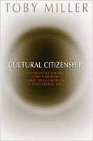

<body bgcolor="#FFFFFF" text="#000000" link="#0000FF" vlink="#CC0000" alink="#CC0000"><center><hr width="350" size="1" align="center" noshade>A lively, incisive view of what citizenship means today<hr width="350" size="1" align="center" noshade><p><a href="https://cdcshoppingcart.uchicago.edu/Cart/ChicagoBook.aspx?ISBN=9781592135608&&PRESS=temple" target="_top">Buy this book!</a> | <a href="https://cdcshoppingcart.uchicago.edu/Cart/Cart.aspx?PRESS=temple" target="_top">View Cart</a> | <a href="https://cdcshoppingcart.uchicago.edu/Cart/Cart.aspx?PRESS=temple" target="_top">Check Out</a></p><p></p></center><!--none//--><h1> Cultural Citizenship</h1>
<H2>Cosmopolitanism, Consumerism, and Television in a Neoliberal Age</H2>
<h3>Toby Miller</h3>
<P>cloth 1-59213-560-9 $80.50, Nov 06, <FONT COLOR=#990033>Available</FONT>
<br>paper 1-59213-561-7 $29.95, Nov 06, <FONT COLOR=#990033>Available</FONT>
<br>Electronic Book 1-59213-562-5 $29.95 <FONT COLOR=#990033>Available</FONT>
<BR> 248 pp
6x9
2&nbsp;tables 1&nbsp;figure 1&nbsp;halftone
</P><BLOCKQUOTE><I>"</i>Cultural Citizenship<i> is a brilliant and original treatise on citizenship and consumerism. It provides original and compelling perspectives on citizenship and a strong critique of how obsession with consumption has displaced concern for politics and citizenship in the U.S. (and elsewhere).... A model of a passionate and political cultural studies that engages key issues of the present moment."</i>
<br>&#151;<b>Douglas Kellner</b>, University of California, Los Angeles<i></I></BLOCKQUOTE>
<p>What does it mean to be a "citizen" today, in an age of unbridled consumerism, terrorism, militarism, and multinationalism? In this passionate and dazzling book, Toby Miller dares to answer this question with the depth of thought it deserves. Fast-moving and far-ranging, <i>Cultural Citizenship</i> blends fact, theory, observation, and speculation in a way that continually startles and engages the reader.
<p>Although he is unabashedly liberal in his politics, Miller is anything but narrow minded. He looks at media coverage of September 11th and the Iraq invasion as well as "infotainment"&#151;such as Food and Weather channels&#151;to see how U.S. TV is serving its citizens as part of "the global commodity chain." Repeatedly revealing the crushing grip of the invisible hand of television, Miller shows us what we have given up in our drive to acquire and to "belong."
<p>For far too long, "cultural citizenship" has been a concept invoked without content. With the publication of this book, it has at last been given flesh and substance.
<BR>&nbsp;<h2>Excerpt</h2><P>Excerpt available at <a href="http://www.temple.edu/tempress">www.temple.edu/tempress</a></p>
<BR>&nbsp;<h2>Reviews</h2>
<p><i>"Miller elegantly maps conceptions of ‘cultural citizenship’ across liberalism, cultural studies, area studies, and other domains, only to demonstrate that none suffice to address commercial television’s abject failure to provide adequate reporting on fundamental issues and the U.S.’s ‘major influences around the globe.’...</i>Cultural Citizenship<i> is a thought-provoking demonstration of what cultural studies can and should be at its politicized best.".</i>
<br>&#151<b><I>The International Journal of Communication</I></b>
<p><i>"Miller provides a wealth of material exposing the commodifying and consumerizing effects of media."</i>
<br>&#151<b><I>Choice</I></b>
<p><i>"This is a book for the people at a time when they most need to read books, especially books that cast a critical light on what commercial media, particularly Anglo-American network television media, do to the possibility of politics....The heart of the book is comprised of an engaging three-chapter romp through the contemporary televisual spectacle and its discursive machinery....Miller really hits his stride here, deftly assembling a broad range of resources from the scholarly literature, activist media and the popular press. The treatment of the contemporary phenomena of food and weather TV are especially original and insightful, and show Miller at his best, as a cagy and wry narrator of how and why the seemingly frivolous is, in fact, deadly serious."</i>
<br>&#151<b><I>The Canadian Journal of Sociology Online</I></b>
<p><i>"There’s an impressive range of research and detail in this book."</i>
<br>&#151<b><I>Media International Australia</I></b>
<p><i> "[T]his is a refreshing read, it is passionate and informed and offers a disturbing insight into some aspects of US society. Detractors will hate it and supporters will love it, while for those undecided on the role of media in society, reading this should be obligatory. Miller definitely offers some rich food for thought."
</i><br>&#151<b><I>The European Journal of Communication</I></b>
<p><i>"[Miller] has taken a strongly liberal view of current societal trends by focusing on the nonentertainment side of television…an indignant book that effectively melds theory with practical examples of what is going on…. It’s a compelling read."</i>
<br>&#151<b><I>Communications Booknotes Quarterly</I></b>
<p><i>"</i>Cultural Citizenship<i> is a tour de force against US television media’s methods of reporting or failing to report foreign/military policy and corporate/governmental conduct.... Miller draws on to illustrate his claims: the media coverage of terror, food and weather. This mixture of seemingly pivotal and mundane topics initially strikes the reader as odd. But it soon becomes apparent that they provide the key examples of how the US media use these areas to boost conservative, nationalist, protectionist, patriotic, and militarist notions of citizenship.... </i>Cultural Citizenship<i> is an expansive and incredibly detailed study....[W]ith its investigative focus and particularly its thought-provoking outlook on environmentalism and social justice [</i>Cultural Citizenship<i>] will appeal to academic as well as non-academic readers and should provide ample material for discussion in postgraduate courses."</i><br>&#151<b><I>Sociology</I></b>
<BR>&nbsp;<P><p>&nbsp;&nbsp;<font color="#3152A5">Also available in e-book</font></p></P><BR>&nbsp;<br>
<h2>Contents</h2><P>
Acknowledgments vii
<br>
Introduction 1<br>
1. What Is Cultural Citizenship? 27
<br>2. Television Terror: Being Ignorant, Living in Manhattan 74 <br>
3. Television Food: From Brahmin Julia to
Working-Class Emeril 112
<br>4. Television Weather: Tomorrow Will Be . . . Risky and Disciplined 144<br>
Conclusion 177 <br>
References 181 <br>
Index 229
</P><BR>&nbsp;<H2>About the Author(s)</H2>
<table><tr><td valign="top"><img src="/tempress/authors/1805_au.gif" height="90" width="75"></td><td width="100%" valign="middle"><p><b>Toby Miller</b> is Professor of English, Sociology, and Women's Studies, and Director of the Program in Media & Cultural Studies at the University of California, Riverside. He is the editor of two journals: <i>Television & New Media</i> and <i>Social Identities</i>, and the author of <i><a href="1571_reg.html" target="_top">Sportsex</a></i> (Temple).</P></td></tr></table>
<BR><H2>Subject Categories</H2>
<p><A HREF="/tempress/mass_media.html" TARGET="_top">Mass Media and Communications</a>
<BR><A HREF="/tempress/sociology.html" TARGET="_top">Sociology</a>
<BR><A HREF="/tempress/american.html" TARGET="_top">American Studies</a>
</p>
<p align="center"><a href="https://cdcshoppingcart.uchicago.edu/Cart/ChicagoBook.aspx?ISBN=9781592135608&&PRESS=temple" target="_top">Buy this book!</a> | <a href="https://cdcshoppingcart.uchicago.edu/Cart/Cart.aspx?PRESS=temple" target="_top">View Cart</a> | <a href="https://cdcshoppingcart.uchicago.edu/Cart/Cart.aspx?PRESS=temple" target="_top">Check Out</a></p><p><font face="Arial" size="1"><a href="copyright.html" onMouseOver="window.status='Web Copyright Policy';return true;" onMouseOut="window.status=''" title="Web Copyright Policy">&copy;</a> 2015 <a href="http://www.temple.edu" target="new" onMouseOver="window.status='Link to Temple University home page';return true;" onMouseOut="window.status=''" title="Link to Temple University home page">Temple University</a>. All Rights Reserved. http://www.temple.edu/tempress/titles/1805_reg.html</font></p>